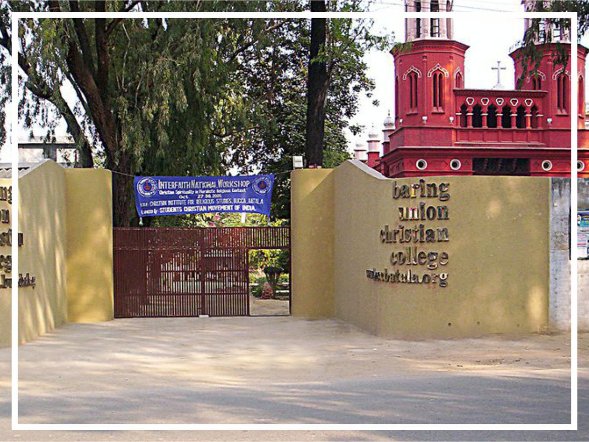

Batala
Batala: Heaps of garbage are likely stand out in the Batala Municipal
Corporation (BMC) elections as the local body has so far failed to come up
with a permanent solution. The problem persists in almost every ward of
the city.
PMC officials also face the challenge of sanitary workers’ shortage, besides
the lack of funds for collection and disposal of waste. In the past few
months, the civic body had made attempts to cope up with the issue as it
usually faces the strikes of ‘safai sewaks’ (sanitation workers) to lift the
garbage from various sites of the city but in vain.
PMC needs over 1,500 workers but it has only 800 ‘safai sewaks’, including
200 hired on contractual basis. Out of these, around 150 employees are
allegedly made to work in the houses of senior officials of the civic body and the state government.
“In 1995, the corporation was a small municipal council and had 1,590 safai sewaks. The municipal corporation, which came in
place of council, covered far bigger area but has only 800 sanitation workers. The workers are forced to work with residents of
senior officials. They go on strike over their demands for Employee Provident Fund (EPF) and salaries often. Many contractual
workers are getting a monthly salary of Rs 5,000, that too after three months,” alleged PMC workers union leader Naresh Kumar.
Lahori Gate, opposite Shahi Dawakhana and Mochi Mohalla, opposite State College, Bishan Nagar, Gurbaksh Colony and near
bus stand flyover have huge garbage dumps. To tackle the problem, Batala MC had recently launched a pilot project
‘underground solid waste bin’. Under the project ‘smart bins’ were to be installed at 12 different spots in the city.PMC health officer Dr Sudesh Partap Singh said, “We have recruited new motivators and community development officers to
create awareness among the people. We have made garbage pits in Yadvindra Enclave while ‘smart bins’ project has also been
launched. We have involved 50 NGOs, which are willing to spend on their own to improve the health of the city. We are also
reviewing the check points and taking suggestions from various prominent people and NGOs.”
Solid waste treatment plant project hanging fire
The integrated municipal solid waste management and treatment plant (IMSWMTP) was proposed in 2013 at Dudhar village.
However, residents of Dhudhar and nearby villages have been protesting against the setting up of the plant. The corporation has
already paid a huge amount to the village panchayat to take the 20 acres of the land on lease.
The plant would have catered to 26 towns, including Batala, from where around 260 tonnes of solid waste would be recycled
every day.
Dump Virodhi Action Committee president Bharpoor Singh Dakala said, “We will not allow the plant to come up. At present the
farming is being done on this land. We are already suffering due to pollution caused by industries around.”

Batala is the eighth largest city in the state of Punjab, India in terms of population after Ludhiana, Amritsar, Jalandhar, Batala, Bathinda, Mohali and Hoshiarpur. It is a municipal council in Gurdaspur District in the Majha region of the state of Punjab, India. It is located about 32 km from Gurdaspur, the headquarters of the district. It is also a Police District. Batala ranks as the most populated town of the district with 31% of the total population of district. It is the biggest industrial town in the district. It is the centre of the Majha region of Punjab.
Batala is important place for Sikh devotees. Guru Nanak Dev Ji, the founder of the Sikh religion was married here to Sulakhni, the daughter of Mul Chand Chauna in 1485. Many temples and gurdwaras related to the guru's marriage attract devotees from near and far. Every year celebrations are conducted on the anniversary of Guru Nanak's marriage. There is also a historical gurdwara Satkartarian sahib related to 6th guru of Sikhs Shri Hargobind ji.
Batala was once known as the Iron Bird of Asia as it produced the highest amount of C.I. Casting, agricultural and mechanical machinery. Batala is still one of the leading cities in Northern India in manufacturing of C.I Casting and mechanical machinery. It's also an agricultural marketplace and industrial center. Cotton ginning, weaving, sugar refining, and rice milling are some of other industries taking place here.

The interesting fact about Batala is that this city is called Tehsil but it is more developed than its district Gurdaspur. Nowadays people are protesting and participated in agitations in regard of their long standing demand of district and municipal corporation status to Batala.

Know More About Ashwani Ji
Sekhri first successfully contested for Punjab Legislative Assembly from Batala in 1985. He was re-elected from Batala in 2002 and 2012. In 2002, he was appointed Minister of State for Tourism and Culture.